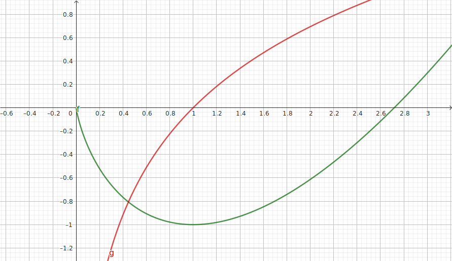
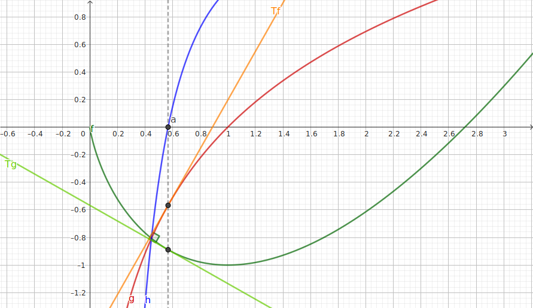

Selon les autorités sanitaires d'un pays, 7% des habitant sont infectés par une certaine maladie.
Dans ce pays, un test est mis au point pour détecter cette maladie. Ce test a les
caractéristiques suivantes :
pour les individus malades, le test donne un résultat négatif dans 20% des cas ;
pour les individus sains, le test donne un résultat positif dans 1% des cas.
Une personne est choisie au hasard dans la population et testée.
On considère les événements suivants :
M : « la personne est malade » ;
T : « le test est positif ».
Calculer la probabilite de l’evenement M∩T. On pourra construire un arbre pondéré :
On choisit dix personnes au hasard dans la population. La taille de la population de ce pays permet
d’assimiler ce prélèvement à un tirage avec remise.
On note \(X\) la variable aléatoire qui donne le nombre d’individus ayant un test positif parmi les
dix
personnes.
Donner sans justifier la nature et les paramètres de la loi de probabilité suivie par \(X\).
Donner sans justifier l'expérance de \(X\).
\(X\) compte le nombre de tests positifs parmi n=10 ; pour chacune des 10 personnes, le
test est indépendant et la probabilité de succès est p=0,0653. \(X\) suit donc une loi
binomiale de paramètres n et p.
\(E(X)=np=0{,}653\).
Déterminer la probabilité pour qu’exactement deux personnes aient un test positif. On
arrondira le résultat au centième.
Déterminer le nombre minimum de personnes à tester dans ce pays pour que la probabilité qu’au moins
l’une d’entre elles ait un test positif, soit supérieure à 99%.
Soit \(n\) le nombre minimal recherché ;
\(P(X\geqslant 1)=1-P(X=0)=1-(1-p)^n\)
Donc \(P(X\geqslant 1)\geqslant0{,}99\) équivaut à \((1-p)^n\leqslant 0{,}01\), soit
\(n\log(1-p)\leqslant -2\), donc \(n\geqslant\dfrac{-2}{\log(1-p)}\approx 68{,}2\), donc
\(n=69\).
Tourner S.V.P.
Étude de fonction (10
points) Partie A
On étudie la fonction \(h\) définie sur l'intervalle ]0;+∞[ par : \(h(x)=1+\dfrac{\ln(x)}{x}\)
Par croissance comparée entre \(\ln\) et \(x\) en +∞ :
\(\displaystyle\lim_{x\to+\infty} 1+\dfrac{\ln(x)}{x}=1+0^+=1^+\)
\(h\) étant dérivable, on note \(h'\) sa dérivée.
Vérifier, en calculant, que pour tout \(x\) de l'intervalle ]0;+∞[, on a
\(h'(x)=\dfrac{1-\ln(x)}{x^2}\)
On utilise la dérivée du quotient :
\(h'(x)=0+\dfrac{\frac{1}{\cancel{x}}\times \cancel{x}-\ln(x)\times
1}{x^2}=\dfrac{1-\ln(x)}{x^2}\)
Dresser le tableau de variation de \(h\) sur l'intervalle ]0;+∞[.
\(ln\) étant croissante et \(\ln(\textrm{e})=1\) donc \(1-\ln(x)\) est décroissante et s'annule
uniquement en e.
\(x\)
0
α
e
+∞
\(h'(x)\)
+
+
0
-
\(h\)
1+e-1
↗
↘
0
1+
↗
-∞
Démontrer que l'équation \(h(x)=0\) admet une unique solution α dans ]0;+∞[. Justifier que
0,5<α<0,6.
\(h\) est dérivable donc continue sur ]0;+∞[ ; d'après le tableau de variation, \(h\) et minorée
par 1 sur ]e;+∞[, donc elle n'a pas de zéro dans cet intervalle.
\(h\) est strictement croissante (et continue) sur ]0;e[, de -∞<0 à 1-e-1>0 :
elle s'annule une seule fois en un réel α. Comme \(h(0{,}5)\approx-0{,}4<0\) et
\(h(0{,}6)\approx 0{,}1>0\), on sait, par croissance de \(h\), que 0,5<α<0,6
Partie B
Dans cette partie, on considère les fonctions \(f\) et \(g\) définies sur l'intervalle ]0;+∞[ par :
\(f(x)=x\ln(x)-x\) et \(g(x)=\ln(x)\)
On se place dans un repère orthonormé.


On note, pour tout nombre réel \(a>0\) :
\({Tf}_a\) la tangente à la courbe de \(f\) en \(a\) ;
\({Tg}_a\) la tangente à la courbe de \(g\) en \(a\) ;
Démontrer que les coefficients directeurs de \({Tf}_a\) et \({Tg}_a\) sont respectivement
\(\ln(a)\)
et \(\dfrac{1}{a}\).
Il suffit de calculer \(f'(a)=1\ln(a)+\frac{\cancel{a}}{\cancel{a}}-1=\ln(a)\) (on utilise
la
dérivée du produit pour calculer la dérivée de la partie \(x\ln(x)\)).
De même, \(g'(a)=\dfrac{1}{a}\).
Démontrer que la fonction \(f\) est convexe et que la fonction \(g\) est concave.
On dérive les dérivées premières pour vérifier que \(f''(a)=\dfrac{1}{a}>0\) (convexité
de
\(f\)) et que \(g''(a)=\dfrac{-1}{a^2}<0\) (concavité de \(g\)).
On rappelle (propriété admise ici) qu'une droite de coefficient directeur \(m\) est dirigée un
vecteur de coordonnées \(\left(\begin{array}{c} 1 \\ m \\ \end{array}\right)\).
Démontrer que deux droites de coefficients directeurs \(m\) et \(m'\) sont perpendiculaires
lorsque
\(m\times m'=-1\).
\(\left(\begin{array}{c} 1 \\ m \\ \end{array}\right)\cdot\left(\begin{array}{c} 1 \\ m' \\
\end{array}\right)=1+mm'\), et ce produit scalaire est nul (donc les droites sont
perpendiculaires) lorsque \(1+mm'=0\) soit \(mm'=-1\).
En utilisant la propriété énoncée dans la question précédente, démontrer qu'il existe une unique
valeur de \(a\) telle que les tangentes \({Tf}_a\) et \({Tg}_a\) soient perpendiculaires. On en
donnera un encadrement au dixième près.
Le produit de leurs pentes doit être égal à -1, soit \(\dfrac{\ln(a)}{a}=-1\) donc \(h(a)=0\) en
reconnaissant l'expression de la fonction \(h\) de la partie précédente.
Donc avec \(a=\alpha\approx 0{,}57\), les tangentes \({Tf}_{\alpha}\) et \({Tg}_{\alpha}\) sont
ainsi perpendiculaires.
Partie bonus
Démontrer que les courbes des trois fonctions \(f\), \(g\) et \(h\) de l'exercice se coupent en deux
points uniques.